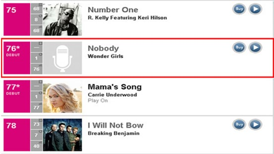

미국과 유럽, 남미에서는 아직 아시아에서와 같이 '한류'라고 칭할 정도는 아니지만 음악, 게임 등을 중심으로 한국 콘텐츠에 대한 인지도가 높아지면서 매니아 층이 형성되고 있다.
대표적인 활동 사례를 살펴보면, 먼저 미국 활동에 주력하고 있는 원더걸스는 '노바디'로 2009년 빌보드 싱글 차트인 'Hot 100'에서 76위를 차지했고, 에픽하이는 동양인 최초로 미국 아이튠즈 힙합/랩 차트 톱 100에 진입했다. 2011년 3월에는 빅뱅의 미니음반 4집이 미국 히트시커스 앨범 차트 7위, 월드 앨범 차트 3위에 올랐으며, 미국과 캐나다, 뉴질랜드, 호주, 핀란드 등 아이튠즈의 종합앨범차트 톱10에도 진입하였다.
|  |
유럽에서도 K-POP이 주목받기 시작했다. 얼마 전 뉴스 보도처럼 한국 아이돌 그룹의 프랑스 파리 공연이 15분만에 매진되었는가 하면, 루브르 박물관, 런던의 트라팔가 광장 등에서 한국 아이돌 그룹 팬들의 플래시몹이 벌어지는 등 젊은 층을 중심으로 K-POP에 대한 관심이 높아지고 있는 추세이다. 이에 프랑스 국영방송 '프랑스2 TV'에서는 '세계를 향한 시선'이라는 프로그램을 통해 한류 열풍과 한국의 대표 아이돌스타들이 아시아 음악시장에서 차지하고 있는 위상을 소개하였으며, 벨기에 공영방송의 'sans chichis'에서는 K-POP을 미국, 일본은 물론 벨기에까지 퍼진 새로운 열풍으로 소개하였다. 또한 전 세계 앨범 판매량을 집계하는 독일의 '미디어 트래픽'이라는 사이트에서는 동방신기의 신보 '왜(Keep Your Head Down)'가 유나이티드 월드 차트 4위에 오르기도 했다.
K-POP의 인기는 남미 지역에도 전파돼 브라질 청소년들의 새로운 우상으로 떠오르고 있다. 브라질 Rede TV의 연예 프로그램인 'Leitura Dinamica'에서 K-POP의 장르별 가수와 뮤직비디오를 소개하며 "K-POP이 미국을 거쳐 브라질까지 건너와 대세임을 부정할 수 없다. 한국 가수들은 쇼 한번 안하고도 브라질 청소년의 새로운 우상이 되었다."라고 전했다. 멕시코와 페루도 브라질과 비슷한 양상을 보이고 있으며, 특히 페루에는 샤이니, 비스트, 유키스 등의 팬 사이트와 팬들의 오프라인 모임이 활성화 돼있어 더욱 놀라움을 주고 있다.